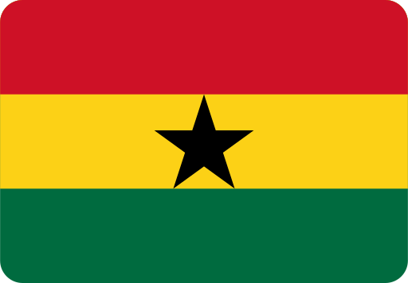

Top Online Casino & Betting Offers for Ghana
Discover the best online casinos and betting sites in Ghana, highlighting top security, exciting bonuses, convenient payment options, and trustworthy platforms.
Trusted reviews, licensed platforms, and exclusive offers for Ghanaian players.
Discover the best online casinos and betting sites in Ghana, highlighting top security, exciting bonuses, convenient payment options, and trustworthy platforms.